For billing and accounts staff
A step-by-step guide to parties, items, bills, invoices, receipts, payments, stock,
reports and backups.
October 2026
Built around the Crown Traders
example company
Read this first
Your books, one step at a time
Crown Books · 1.0
Crown Books keeps the accounts of one business on this computer. It answers three questions:
who owes us, who do we owe, and do the books balance. This guide shows the actual screens
and the buttons to press.
01
Who owes us?
Sales invoices, receipts, receivables and ageing.
02
Who do we owe?
Purchase bills, payments, payables and due dates.
03
Do the books balance?
Trial balance, profit and loss, and the balance sheet.
Before you start
Business name, address, state and GSTIN.
Owner name, email and a password of at least 8 characters.
The date your books should begin.
Customer and supplier list, with phone and GSTIN where known.
Item list with HSN or SAC, unit, GST rate, sale and purchase price.
Opening stock, party balances and cash or bank balances.
How to read a step
Button and field names appear in bold exactly as they appear on screen.
Numbers and voucher numbers appear in monospace.
A red number on a screenshot matches a numbered step or key beside it. Reference figures
use the key printed under the picture.
Tip
Do one chapter at a time. The first five steps in chapter 1 are enough to post your
first invoice. Everything else can wait until you need it.
The one rule that prevents most mistakesNothing is saved until you press Post. Closing the screen or pressing
Cancel discards the entry. A posted voucher is never edited: cancel it with a reason and
enter a new one.
How the pieces fit
MastersWho and whatCompany, parties, items, accounts.
The guide uses the Crown Traders example company, so names and amounts in the screenshots
will differ from your own books. Figures are numbered by chapter, for example Figure 6.2.
Start by situation
A
New business
Chapter 1, then 2.1, 3, 4 and 6. Skip opening balances unless you already have stock or
dues.
B
Moving from Tally or QuickBooks
Read 2.2 and 2.4 first. Bring the closing balances and open bills, then continue at
chapter 5.
C
Daily billing clerk
Chapter 6 for sales, 5 for purchases, 8 for reports, and 9 for the end-of-day backup.
Your first path through the book
01Set upCompany, books begin, parties and items.
→
02BuyPost a purchase bill and pay the supplier.
→
03SellPost an invoice, print it, record the receipt.
→
04CheckTrial balance, profit and loss, backup.
Ten minutes
Read 1.2 to 1.4, 3.2, 4.2, 5.2 and 6.2, then post one purchase and one sale. That is enough
to understand the whole application.
Chapter 01Crown Books · 1.0
01
Start here
Open the app, create the company, set the voucher numbers, and walk the five steps from
empty books to a balanced trial balance. By the end of this chapter you will know where
everything lives.
In this chapterOpen · First run · Numbering · The tour · Sign in · The
screen · Voucher anatomy · First five steps
1.1Open the app
Crown Books is installed on this computer. Open it from the Start menu or the desktop
shortcut. The app checks that this computer is the one the books were installed for. If you
see
“This computer is not authorised”, stop and contact your administrator; the
application is not designed to be copied to another machine.
There is no internet connection, no cloud account and no website sign-in. Everything is
stored in a local database file on this computer.
1.2First-run setup
The first time the app opens, it asks for the company and the owner account. This happens
once. You can change the company details later in Admin → Company.
Business name, owner name and phone. The name is printed on invoices;
the owner is the first user and can do everything.
Owner email. This becomes your sign-in name. Use an address you
check.
Password. At least 8 characters, stored hashed on this machine. There
is no “forgot password” email; keep it somewhere safe.
State and GSTIN. The state decides CGST + SGST or IGST. Enter the
GSTIN exactly as registered, without spaces.
Books begin. The first day Crown Books records transactions. Read 2.2
before choosing a mid-year date.
Click Create company and sign in.
123456
Figure 1.1 The first-run screen. The company and owner are
created together.
Books begin is not the financial year
The financial year is the reporting period, usually 1 April to 31 March. Books begin is the
day this app starts keeping the ledger. Starting fresh on 1 April? Both dates can be 1
April. Migrating in October? Books begin is the day after your last entry in the old system;
the financial year is still the current April-to-March year.
1.3Number your vouchers
The company is created and you are signed in. Before the dashboard, step 1 of 2 asks you to
confirm the numbering. Every document type has its own row: sales invoice, purchase bill,
receipt, payment, credit note, debit note and journal.
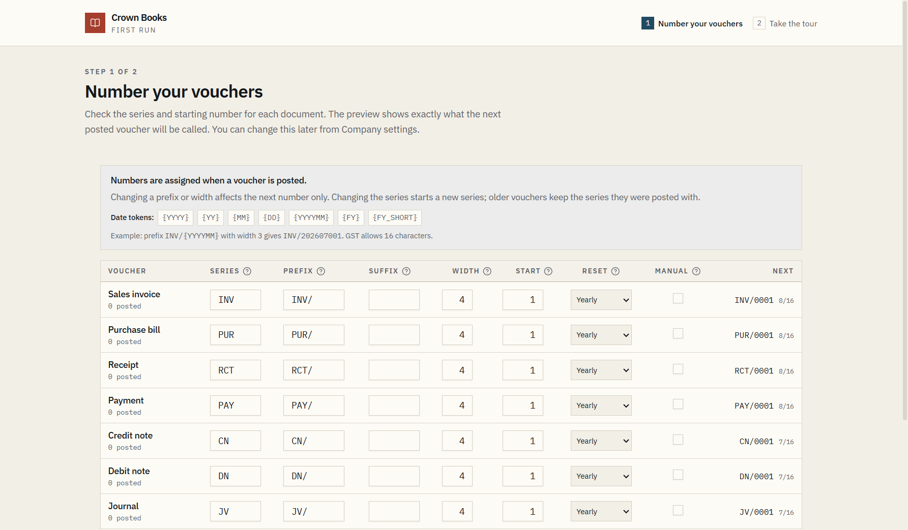
12
Figure 1.2 Voucher numbering. The Next column
shows exactly what the next posted document will be called.
1Each document has its own series
2The next number is previewed live
Column
What it does
Series
The short code stored on the voucher, for example INV.
Changing it starts a new series; older vouchers keep theirs.
Prefix / Suffix
Text around the number, for example INV/. Both may
contain date tokens.
Width
How many digits the number uses, from 1 to 8. A larger value is never cut.
Start
The first number in a new series or financial year.
Reset
Yearly, monthly or never. Yearly restarts on 1 April.
Manual
Allows typing the number when posting. It must still be higher than the last one
used.
Next
A live preview from the same formatter the posting engine uses, with the GST limit of
16 characters.
The date tokens are {YYYY}, {YY},
{MM}, {DD},
{YYYYMM}, {FY} and
{FY_SHORT}. A prefix of
INV/{YYYYMM} with width 3 produces
INV/202607001.
Numbers are assigned when a voucher is posted, not when the entry form is opened. Changing
a prefix or width affects the next number only; a posted voucher keeps the number it was
given. Click Save numbering to continue, or open
Admin → Voucher numbering later.
1.4The guided tour
Step 2 of 2 is a checklist, not a simulation. It lists the five steps from empty books to
a balanced trial balance, and each Open button goes to the real screen.
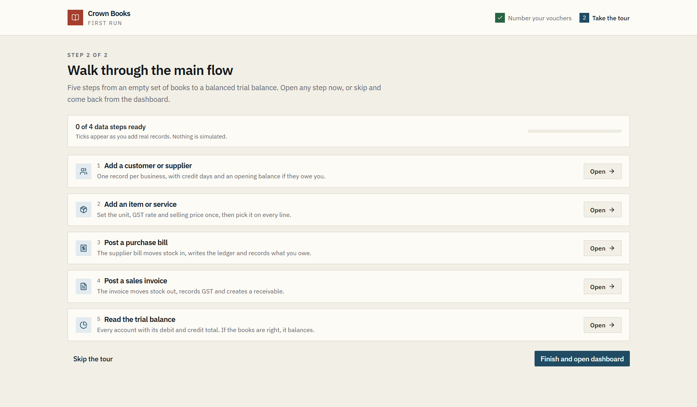
123
Figure 1.3 The guided tour. Progress is read from your real
records, so nothing ticks until a document is posted.
1Five steps from empty books to reports
2Open any step in the real app
3Skip and return from the dashboard
The counter and progress bar read the same rows as the dashboard. A step is ticked only
after you add a party, add an item, post a purchase or post a sale. The last step, reading
the trial balance, is a pointer rather than a stored tick.
Click Skip the tour to go straight to the dashboard, or
Finish and open dashboard when you are done. The
Set up the books card on the dashboard keeps the same checklist, with the
next step and a Continue link.
1.5Sign in again
After setup, every launch shows the sign-in screen. Enter the owner email and password and
click
Sign in. To leave, open the account menu at the top right and choose
Sign out. Closing the window is also safe: every posted voucher is already
in the database.
1.6The screen
Every page has the same frame: a dark navigation rail on the left, a thin top bar, and the
page itself. The rail is grouped by the work you are doing, not by database tables.
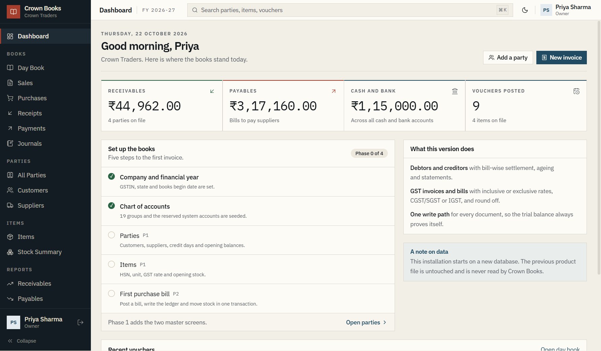
1234
Figure 1.4 The dashboard for Crown Traders, with the
navigation rail and the four headline numbers.
1Four numbers for today
2Quick actions
3The modules live in this rail
4Current financial year
Rail group
What it is for
Dashboard
Receivables, payables, cash and bank, vouchers posted, and the setup checklist.
Books
Day Book, Sales, Purchases, Receipts, Payments and Journals: the documents.
Parties
All Parties, Customers and Suppliers. One record per business.
Items
Items and Stock Summary: goods, services and what is on hand.
Reports
Receivables, Payables, Ageing, Trial Balance, Profit and Loss, Balance Sheet. The sales
and purchase registers open from their list pages.
Masters
Chart of Accounts, Tax Rates and Units.
Admin
Voucher numbering, Company, Users and Roles, and Backup.
The top bar shows the page name and the current financial year. The search box in the middle
finds parties, items, vouchers, accounts and screens from anywhere: click it or press
Ctrl+K. The theme button switches between the paper and dark
palettes, and the account menu at the right holds the signed-in user and
Sign out.
Rail items are gated by the signed-in user’s role. A Billing Clerk, for example, does not see
Admin at all, and sees only Tax Rates and
Units under Masters. Typing a protected address such as
Company or Users sends them back to the dashboard. The owner account created at first run can
see and do everything. Chapter 10 lists the seeded roles and what each one can reach.
1.7The anatomy of a voucher
A voucher is any document that changes the books: an invoice, a bill, a receipt, a payment,
a journal or a contra. Every entry screen uses the same four-part pattern. Once you know
one, you know all of them.
01HeaderParty, date, due date, reference and place of supply.
→
02LinesItem, description, quantity, rate, discount and GST.
→
03TotalsTaxable value, tax, round off and the final total.
→
04PostThe server checks, numbers and writes the voucher.
The party field on a sale or purchase is a search box, not a plain list. Click it or press
F4 and type part of the name, phone number or GSTIN. The same
applies to the item on each line: choosing an item fills its description, HSN, unit, rate
and GST rate. The footer of the entry screen lists the other keys:
Alt+A adds a line, Ctrl+Enter posts, and
Esc goes back.
1.8Your first five steps
For a complete cycle, do these five things in order. The rest of the guide explains each one
in detail.
Create the company in first-run setup. Use 1 April as books begin if you
are starting a fresh year. Confirm the voucher numbers and skip or follow the tour.
Add a customer and a supplier under Parties. One record each is enough to
begin.
Add one item under Items. Enter its HSN, GST rate and sale price.
Post a purchase bill under Purchases. This brings stock in and creates
the supplier payable.
Post a sales invoice under Sales. Then open it and click
Print.
1.9Where do I…?
Every task starts from the navigation rail. This is the short version.
I want to…
Go to
Find a party, item, voucher or screen
Search in the top bar, or Ctrl+K
Record a sale
Books → Sales → New invoice
Record a purchase
Books → Purchases → New bill
Record a receipt
Books → Receipts → New receipt
Pay a supplier
Books → Payments → New payment
Find a voucher
Books → Day Book, or search on the page
Add a customer or supplier
Parties → All Parties → New party
Add an item
Items → Items → New item
Check who owes you
Reports → Receivables or Ageing
Check that the books balance
Reports → Trial Balance
Change voucher numbers
Admin → Voucher numbering
Add a tax rate or a unit
Masters → Tax Rates or Units
Add a user or change a role
Admin → Users and Roles
Back up
Admin → Backup → Create backup
Chapter 02Crown Books · 1.0
02
Company and opening balances
The company profile is printed on every document. The chart of accounts is the list of
ledgers behind the reports. Opening balances are the one-time bridge from your old books.
In this chapterCompany settings · Books begin · Chart of accounts ·
Opening balances
2.1Company settings
Open Admin → Company. The page has four sections: identity, financial year,
stock and rounding, and invoice terms. The first two are printed on documents; the last two
control costing and rounding.
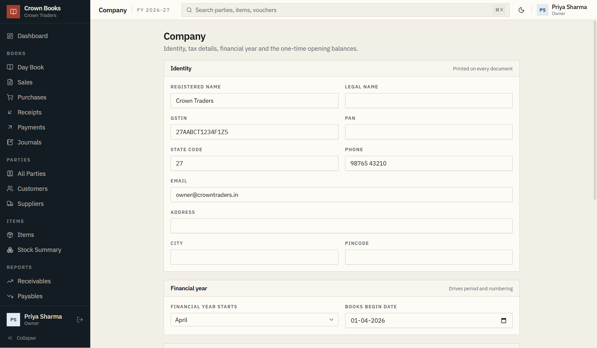
12
Figure 2.1 Company settings. Identity is printed on documents;
the financial year drives numbering and reports.
1Identity printed on invoices
2Financial year and books begin
Registered name
The name printed on invoices, usually the legal or trading name.
GSTIN, PAN, state code
Registration details. The state code is two digits, for example 27 for Maharashtra.
Address, city, pincode
The address printed above the invoice lines.
Financial year starts
The month your reporting year starts. April is the default for India.
Books begin date
The first day this app records transactions. See 2.2.
Costing method
Keep Weighted average. This edition values stock at weighted average
cost.
Round off
How the invoice total is rounded. Invoice total is the usual choice.
Default terms
Saved with the company, but not printed by the current invoice layout.
Leave this untickedAllow selling below stock on hand is recorded as a setting but the current
build does not enforce a stock guard. Keep it unticked and check the stock summary before a
large sale.
2.2What “books begin” means
Books begin is the first day Crown Books is responsible for the ledger. Before that date,
the history lives in your old system, your accountant’s file, or nowhere. At that date you
bring in one opening position: what you own, what you owe, and what customers owe you.
It is not the financial year. A business can have a financial year from 1 April to 31
March and still begin its Crown Books ledger on 1 October after migrating from Tally. An
October invoice still belongs to the current April-to-March year.
Situation
What to enter
Starting a new business
The day you want the books to start, often 1 April or the day of the first sale.
Fresh financial year
1 April of that year. Opening balances are the previous 31 March closing balances.
Migrating mid-year
The day after the last entry in the old system. Opening balances are as at the close
of the day before.
Only using Crown Books for sales
Still use the real start date. Do not enter a later date just to avoid old data.
Opening balances are the day before
If the old system is closed on 30 September and books begin is 1 October, the opening
balances are the position at the close of 30 September. Post the opening voucher dated 1
October, then start entering October transactions.
2.3Chart of accounts
Every voucher writes to ledgers. The chart of accounts is the list of those ledgers,
grouped into assets, liabilities, equity, income and expenses. Crown Books seeds a working
set so you do not have to create one from scratch.
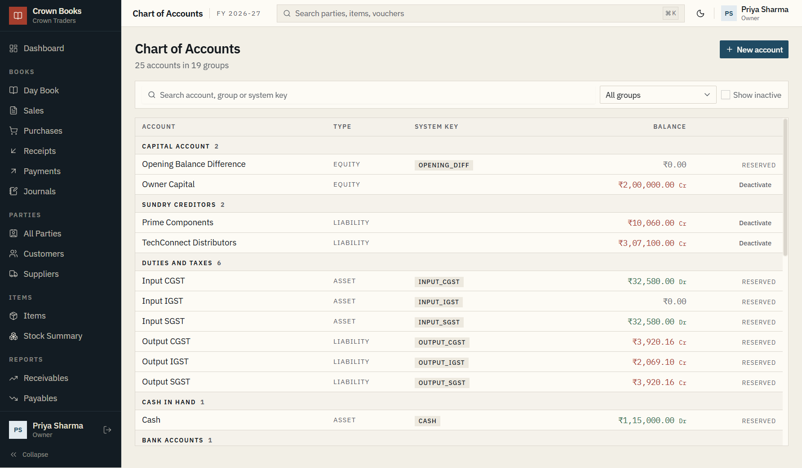
123
Figure 2.2 The chart of accounts. The cards and the
Balance by group chart show where the ledger's value sits; rows marked
Reserved are used by the posting engine.
1Add a ledger
2Filter by account group
3Reserved rows cannot be deactivated
The four cards split the ledger into Assets, Liabilities,
Income and Expenses. The
Balance by group chart ranks the groups by value, so a large balance in an
unexpected group is visible before you read the rows. It reads the same accounts as the
table below.
Click New account.
Enter a Name, for example Office Expenses.
Choose a Group. It decides the nature, for example Indirect Expenses.
Check the Type. It follows the group but can be adjusted.
Leave the opening balance at zero unless you are setting up the opening position.
Click Add account.
Reserved ledgers have a fixed job: sales, purchases, GST, inventory, cost of goods sold,
round off and the opening difference. Add your own ledgers for rent, salaries or travel
without touching them.
The chart is gated by the company.view permission. A user without
it does not see Masters in the rail, and the page cannot be opened by
typing its address.
2.4Opening balances
Opening balances come from three places: the party record, the account record and the item
record. They are collected into one opening voucher so that the trial balance stays
balanced.
Add party opening balances in the party records. Positive means the party owes you;
negative means you owe the party.
Add the opening balance and side on each bank, cash, loan or capital account.
Add opening quantity and rate on each goods item. Services do not hold stock.
Open Admin → Company, scroll to Opening balances, and
choose the Opening date.
Click Post opening balances. One
OPN/0001 voucher is created.
Open the trial balance and check that debits equal credits.
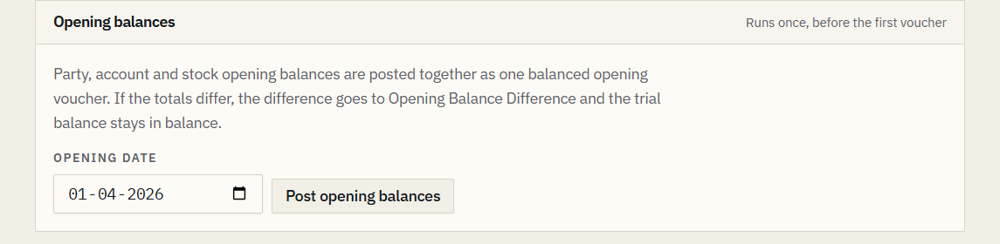
45
Figure 2.3 The opening balances section. It runs once,
before the first real voucher.
2.5Opening balance checklist
The old system is closed and reconciled on the day before books begin.
Every customer and supplier balance has the correct Dr or Cr side.
Cash, bank, loans and capital are entered on the account records.
Goods have opening quantity and rate, or zero if you are bringing purchase history.
The opening date matches the day before the first new transaction.
The trial balance says “Debits equal credits” and Opening Balance Difference is zero or
explained.
After the opening voucher is posted, the opening fields are locked. Corrections go through
a journal, not by editing the voucher.
Chapter 03Crown Books · 1.0
03
Customers and suppliers
One record per business. The same business can be a customer and a supplier. The balance
column tells you whether they owe you or you owe them.
In this chapterOne record per business · Create a party · Edit and
deactivate · Read the list · Credit terms
3.1One record per business
A party is a customer, a supplier, or both. Use one record for a business even if you buy
from and sell to them. The role decides which ledger accounts the party uses; you can change
it later by editing the party.
The balance is shown as Dr or Cr. For a customer, Dr means
they owe you. For a supplier, Cr means you owe them. A negative customer balance or a
positive supplier balance is possible after an advance or an overpayment; it is not
automatically an error.
3.2Create a party
Open Parties → All Parties and click New party.
12
1 Click Parties in the sidebar, then
All Parties. 2 Click New party.
Name. The trading name you will recognise in lists, for example Gupta
Traders.
Phone and Email. Optional, but useful when chasing a bill.
GSTIN and State code. 15 characters and two digits.
The state decides CGST + SGST or IGST on a sale.
Credit days and Credit limit. 30 means the invoice
is due 30 days after the invoice date.
Opening balance. Positive if the party owes you, negative if you owe
the party. It can be corrected until the opening voucher is posted.
Role. Customer, Supplier, or both. You can change it later by editing
the party.
Click Add party.
1345
Figure 3.1 The New party form, filled for a business that
is both a customer and a supplier.
3.3Edit and deactivate
Use Edit on a row to correct a phone number, address, credit days, credit
limit, role or opening balance. The opening balance stops being editable once the opening
voucher is posted; use a journal after that. If a party is no longer used, click
Deactivate: the history stays in the books, and the party stops appearing in
new-entry lists.
Tip
Deactivate a party instead of renaming it to “OLD”. Reports and old vouchers keep the
original name and history, and the list stays readable.
3.4Read the party list
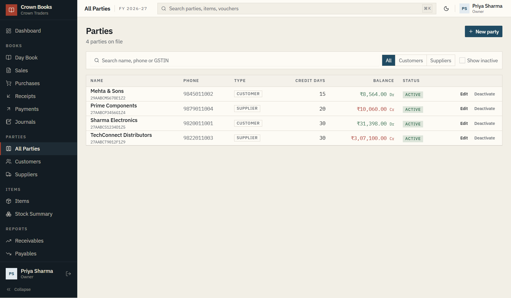
1234
Figure 3.2 The parties list. The cards and charts summarise the
ledger; the balance column is the net position across all posted vouchers.
1Create a customer or supplier
2Search by name, phone or GSTIN
3Filter by role
4Net balance: Dr means they owe you
The top of the page answers three questions before you scroll: how much is owed to you, how
much is overdue, and which customers are over their credit limit. The
Open bills by age chart splits receivables and payables into
Not due, 1–30, 31–60, 61–90
and 90+ days. Top receivables ranks the largest outstanding
balances, so a single customer holding most of the money is obvious.
Search matches name, phone and GSTIN. The role buttons filter to All, Customers or
Suppliers.
Show inactive reveals deactivated records. The Credit days
column is the default payment term, not the age of the current balance.
3.5Credit days and credit limit
Credit days are copied to the due date when you choose the party on an invoice. You can
change the due date for an individual invoice. Ageing reports use the due date by default,
so a wrong credit term makes a bill look overdue earlier or later than it really is.
Credit limit is a reference figure for your team. In this edition it does not stop an
invoice from being posted. If a customer is near the limit, the person entering the sale
must check.
Role
Use it when
Customer
You sell to them. They appear in Sales and Receivables.
Supplier
You buy from them. They appear in Purchases and Payables.
Both
You buy and sell to the same business. One record keeps the net balance in one
place.
Chapter 04Crown Books · 1.0
04
Items and stock
An item is anything you buy or sell: a physical product with stock, or a service with no
stock. The item carries the HSN or SAC, the unit, the GST rate and the default prices.
In this chapterGoods and services · Create an item · Opening stock · Item
list · Stock summary · How stock moves
4.1Goods and services
A goods item carries stock. Buying it increases quantity, selling it
decreases quantity, and the stock summary shows what is left. A
service item has no stock; it is used for maintenance, consulting or any
other work billed by quantity, hours or a flat rate.
4.2Create an item
Open Items → Items and click New item.
12
1 Click Items in the sidebar, then Items.
2 Click New item.
Name and SKU. The name appears on the invoice; the
SKU is your internal code.
HSN / SAC. The GST classification. Goods use HSN, services use SAC.
Unit and GST rate. 0, 5, 12, 18 or 28 percent. The
rate is copied to a new invoice line but can be changed there.
Service item (no stock). Tick for services.
Sale price and Purchase price. Defaults, not locked
prices.
Opening qty and Opening rate. Only for goods you
already hold. Editable until the item has stock movements.
Reorder level. A reference for purchasing; it does not create an
alert in this edition.
Click Add item.
13456
Figure 4.1 The New item form, filled for a goods item with
opening stock.
4.3Opening stock
Opening quantity and rate are included in the one-time opening voucher. They are not a
purchase bill. If you enter opening stock and then also enter a purchase bill for the same
goods, stock and cost will be counted twice.
Choose one methodOpening stock only: enter what you hold now and start buying from today.
Full purchase history: leave opening stock at zero and enter the old
purchase bills. Do not mix the two for the same goods.
4.4The item list
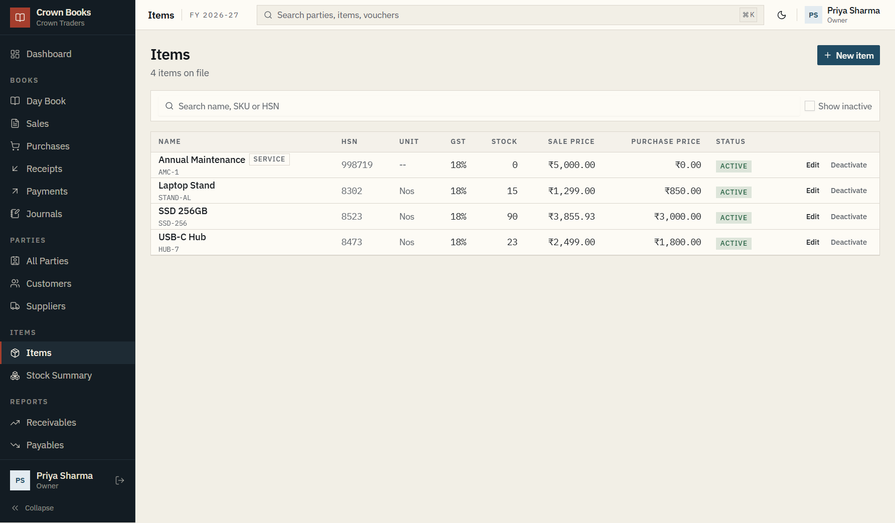
123
Figure 4.2 The item list. Stock and prices are shown per item;
service items are tagged.
1Create a goods or service item
2HSN or SAC and GST rate
3Quantity on hand, from posted movements
The four cards across the top are inventory value at cost, the number of items, how many are
at or below their reorder level, and how many are out of stock.
Stock value by item ranks the largest inventory balances, so the item
holding most of your money is visible before you read the table. The
Quick filters jump straight to low stock, out of stock or services.
The list shows HSN or SAC, unit, GST rate, stock on hand, sale price and purchase price. Use
the search box for name, SKU or HSN. Edit changes the descriptive fields
and default prices; opening quantity and rate stay fixed. Deactivate hides
an item from new entries without deleting history.
4.5Stock summary
Open Items → Stock Summary. This is a computed report, not a data-entry
screen. It reads every posted purchase, sale and return.
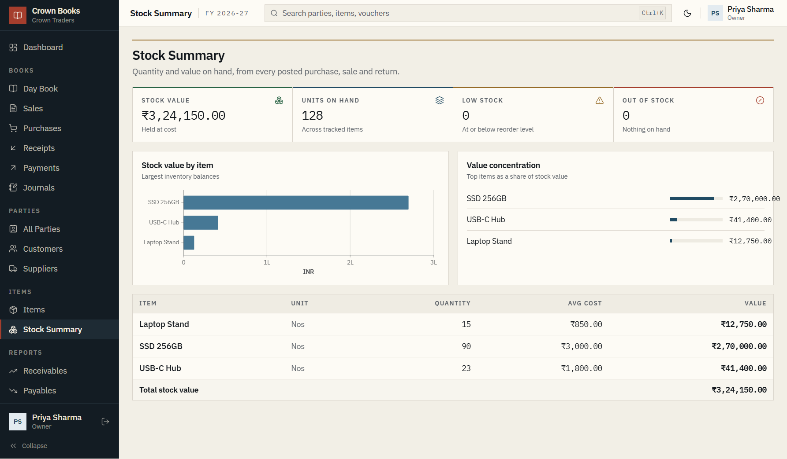
123
Figure 4.3 Stock on hand by item, with quantity and value at
weighted average cost.
1Quantity after every posted movement
2Value at weighted average cost
3Total stock value
Quantity is what is left. Value is quantity multiplied by the weighted average cost of the
item. The total at the bottom is the inventory value that appears on the balance sheet.
Services are not shown because they hold no stock.
The Stock value by item chart ranks the largest balances, and
Value concentration shows how much of the total each top item represents.
Both read the same rows as the table, so they move together after every posted purchase or
sale.
4.6How stock moves
Action
Effect on stock
Effect on the books
Post a purchase bill
Quantity increases.
Creditor increases, inventory increases, input GST is recorded.
Post a sales invoice
Quantity decreases.
Customer owes you, sales and output GST increase, cost of goods sold is recorded.
Cancel a purchase or sale
The original movement is reversed.
The ledger effect is reversed; the voucher stays with status Cancelled.
Enter opening stock
Quantity starts at the opening figure.
Inventory and the opening difference are recorded once.
Why the stock value can change without a new purchase
The costing method is weighted average. When a new purchase arrives at a different rate,
the average cost of the remaining stock changes, so the value of the same quantity can
move.
Chapter 05Crown Books · 1.0
05
Buying: bills and payments
A purchase bill brings stock in and creates what you owe the supplier. A payment reduces
that balance. The payables report tells you what is still open and when it is due.
In this chapterThe buying flow · New purchase bill · What posting does ·
Pay a supplier · Payables · Purchase register
5.1The buying flow
01Purchase billStock comes in. The supplier becomes a creditor.
→
02PaymentMoney goes out. Allocate it to the bill it settles.
→
03PayablesWhat is still owed, split into not due and overdue.
5.2New purchase bill
Open Books → Purchases and click New bill. The screen is
a bill, not a payment. Enter what the supplier billed you.
12
1 Click Purchases in the sidebar. 2 Click
New bill.
Party. Click the supplier box, or press F4,
and type part of the name, phone or GSTIN. The selected supplier shows the current
balance and credit days.
Date and Due date. The bill date decides the
financial year and the register period. The due date fills from credit days.
Reference. The supplier’s bill number, for example
TC/26-27/604.
Place of supply. The supplier’s state. Same state gives CGST + SGST;
a different state gives IGST.
Add line for each item. Choose the item or type a free-text
description.
Enter Qty, Rate, Disc % and
GST %. HSN and unit fill from the item.
Check Taxable value, the tax split, Round off and
Total.
Add a Narration that will make sense in six months.
Click Post bill. The number, for example
PUR/0001, is assigned at that moment.
125679
Figure 5.1 A new purchase bill with two item lines. The
total is calculated before posting.
5.3What posting does
The supplier’s payable increases by the bill total.
Inventory increases by the taxable value of goods lines; services post to the expense or
purchase ledger without stock.
Input CGST, SGST or IGST is recorded according to the place of supply.
The voucher gets a permanent number and appears in the purchase register and payables.
To print the posted bill, open it from Purchases and click
Print. The print dialog also offers Save as PDF.
The bill is not the payment
Posting a purchase bill does not move money. It records the obligation. Use a payment
voucher when the money actually leaves.
5.4Pay a supplier
Open Books → Payments and click New payment. A payment
can settle one bill, several bills, or stay on account as an advance.
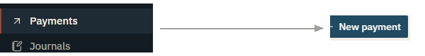
12
1 Click Payments in the sidebar. 2 Click
New payment.
Party. Choose the supplier from the list. Each row shows the current
balance, and the line under the list repeats it.
Date. The date money left, not the bill date.
Amount. The total paid, for example 25,000.
Method and Reference. NEFT, UPI, cheque or cash, and
the bank reference.
Open bills lists unpaid bills with due dates and outstanding amounts.
Enter the amount against the bill in Allocate. Leave the rest
unallocated if it is an advance.
Check Paid, Allocated and
On account at the bottom.
Click Post payment.
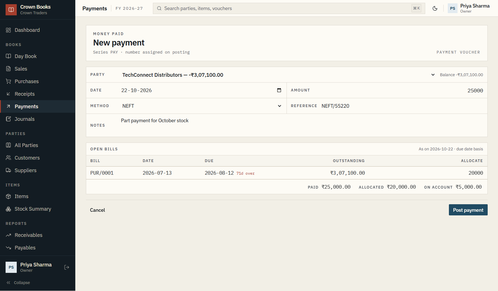
145678
Figure 5.2 A supplier payment. The amount is 25,000, of
which 20,000 is allocated to PUR/0001.
Situation
What to do
Pay one bill in full
Allocate the full outstanding amount to that bill.
Part payment
Allocate less than the outstanding. The rest stays open.
Pay several bills
Enter an allocation against each bill in the same payment.
Advance
Leave the allocation blank. The money sits on account until a bill arrives.
Pay more than the bill
Allocate the bill amount and leave the excess on account.
Cash and bank in this edition
Receipts and payments post to the Cash ledger. The Method list is a label
on the entry screen. To move money between cash and bank, use
Journals → New contra
after the receipt or payment. Bank reconciliation is not part of this edition.
5.5Payables
Open Reports → Payables. The report shows who you owe, split into amounts
not yet due and amounts past the due date.
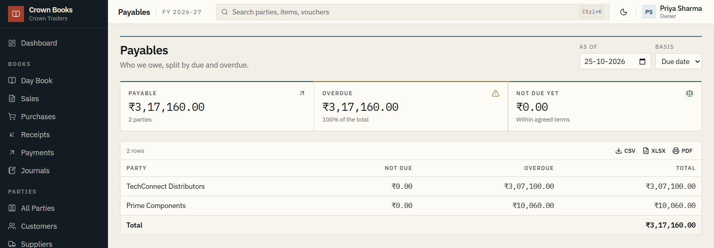
12345
Figure 5.3 Payables as on 22 October 2026. Both suppliers
are past their due dates in this example.
1As-of date
2Due date or bill date basis
3Not yet due
4Past the due date
5Supplier total
As of is the date you are looking at. Basis decides
whether a bill is measured by its bill date or its due date. Use
Due date for collection and payment planning; use
Bill date when you want the age of the document.
5.6Purchase register
Open Reports → Purchase Register. It lists every purchase bill in the
period with taxable value, GST, round off and total.
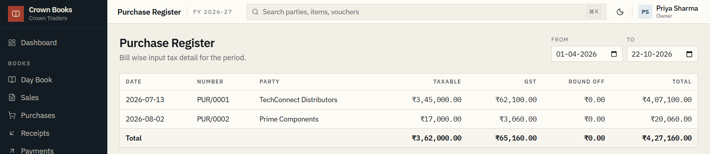
123
Figure 5.4 The purchase register for the financial year.
Totals at the bottom tie to the purchase ledger.
1Every purchase bill in the period
2Input GST for the period
3Totals to tie to the books
Chapter 06Crown Books · 1.0
06
Selling: invoices and receipts
An invoice records what a customer owes. A receipt records what they paid. Receivables and
ageing tell you who to chase and how old the bill is.
In this chapterThe selling flow · New invoice · GST and place of supply ·
Print · Receipt · Receivables and ageing · Sales register
6.1The selling flow
01Sales invoiceCustomer owes you. Stock goes out. GST is recorded.
→
02ReceiptMoney comes in. Allocate it to the invoice it settles.
→
03ReceivablesWhat is still owed, with ageing and due dates.
6.2New sales invoice
Open Books → Sales and click New invoice. Every sale is
against a customer; a cash sale is recorded as an invoice followed by a receipt.
12
1 Click Sales in the sidebar. 2 Click
New invoice.
Party. Click the customer box, or press F4,
and type part of the name, phone or GSTIN. The selected customer shows their balance,
credit days and GSTIN.
Date and Due date. The invoice date decides the
financial year and the sales register.
Place of supply. The customer’s state. Same state as your company
gives CGST + SGST; a different state gives IGST.
Add line for each item. Pick a saved item to fill its description, HSN,
unit, rate and GST rate, or type a free-text description.
Enter Qty, Rate, Disc % and
GST %.
Check the totals and add a Narration.
Click Post invoice. The number, for example
INV/0001, is assigned on posting.
123567
Figure 6.1 A new sales invoice for a Maharashtra customer,
so the tax is CGST + SGST.
Place of supply is the most common GST mistake
The place of supply defaults to your company’s state. For an out-of-state customer, change
it to the customer’s state before posting. If you leave it on your own state, the invoice
will charge CGST + SGST instead of IGST and the GST return will be wrong.
6.3GST and place of supply
GST is charged per line. The place of supply decides how the same 18 percent is split.
Place of supply
What is charged
Example
Same state as the company
CGST + SGST, half the rate each.
Company in 27 (Maharashtra), customer in 27. 18% becomes 9% CGST + 9% SGST.
Different state
IGST at the full rate.
Company in 27, customer in 29 (Karnataka). 18% becomes 18% IGST.
The tax is calculated on the taxable value after the line discount. The total is rounded
according to the company setting, usually at the invoice total. The summary on the right
shows taxable value, CGST, SGST, IGST, round off and total before you post.
6.4Print or save the invoice
Open Sales, click the invoice number, and use Print. In
the system print dialog, choose a printer or Save as PDF. The printed
page carries the company name and GSTIN, the customer, the invoice number and date, the
line items with HSN, the tax split and the total.
1234
Figure 6.2 What the printed invoice looks like. The
navigation and top bar are hidden on paper.
1Invoice number, date and reference
2Customer and GSTIN
3Line items with HSN, quantity, rate and tax
4Tax split and total
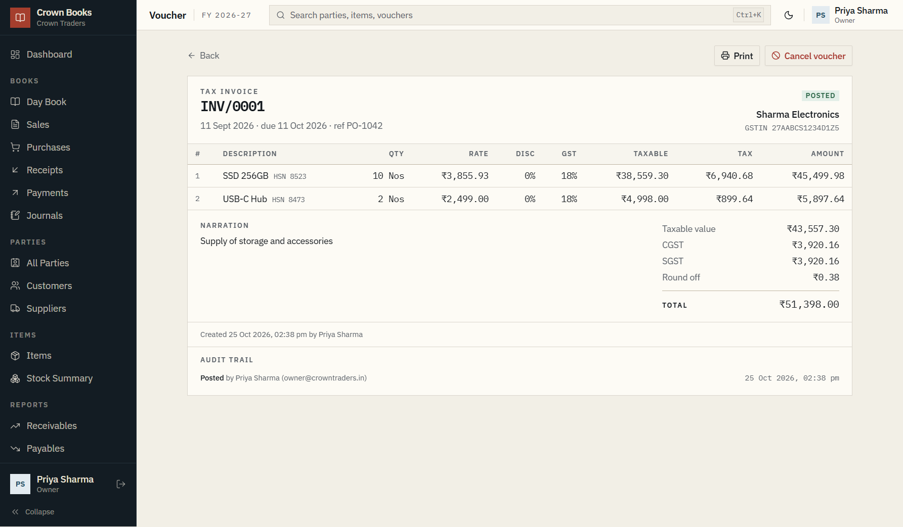
12345
Figure 6.3 The posted invoice screen. Print and Cancel
voucher are at the top.
1Invoice number, date and due date
2Customer and GSTIN
3Print, or save as PDF
4Line detail and tax split
5Amount due from the customer
6.5Receipt from a customer
Open Books → Receipts and click New receipt. A receipt
can settle one invoice, several invoices, or stay on account as an advance.
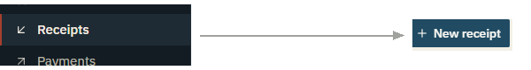
12
1 Click Receipts in the sidebar. 2 Click
New receipt.
Party. Choose the customer from the list. Each row shows the current
balance, and the line under the list repeats it.
Date. The date money was received.
Amount. The total received.
Method and Reference. UPI, NEFT, cheque or cash, and
the reference number.
Open invoices lists unpaid invoices with due dates and outstanding
amounts.
Enter the amount against the invoice in Allocate.
Check Received, Allocated and
On account.
Click Post receipt.
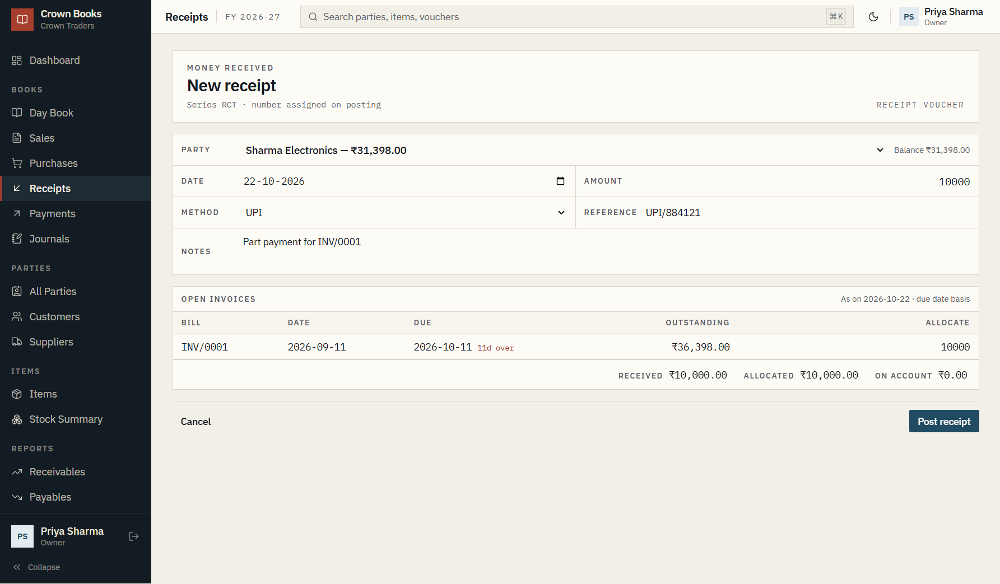
145678
Figure 6.4 A customer receipt. 10,000 is received and
allocated to INV/0001.
Advances and part payments. A receipt larger than the open invoice leaves
the excess on account. A receipt with no allocation is an advance. When the next invoice is
posted, use a new receipt, or adjust the advance through a journal if your accountant
prefers.
6.6Receivables and ageing
Open Reports → Receivables for the customer totals, and
Reports → Ageing for the age buckets.
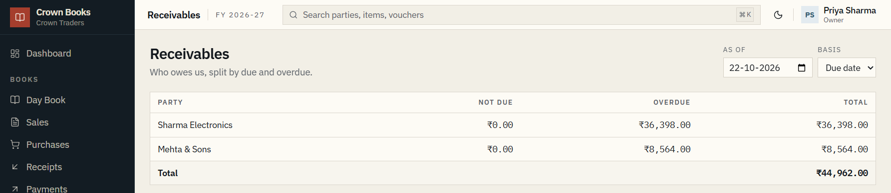
1234
Figure 6.5 Receivables as on 22 October 2026. The overdue
column is the money to chase first.
1As-of date
2Not yet due
3Overdue amount
4Total owed by each customer
Receivables shows not yet due and overdue per customer. Ageing splits the overdue amount
into 30-day buckets. Use Basis to age by due date (default) or bill date;
a bill not yet due stays in Not due even if the invoice is old.
Ageing by party
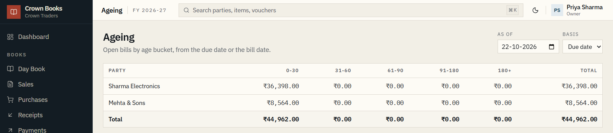
123
Figure 6.6 Bills are grouped into 0–30, 31–60, 61–90, 91–180
and 180+ days.
1Ageing by party
2Thirty-day buckets
3Chase the oldest first
Who to chase first
Start with the largest amount in 61–90 and 91–180, not the largest total. Then check 31–60
for customers who are about to become a bigger problem. A 180+ balance needs a decision:
collect, write off, or ask the accountant.
6.7Sales register
The sales register lists every invoice in a period with taxable value, GST, round off and
total. It is the first check before a GST return or a management review.
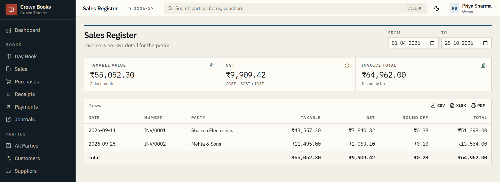
123
Figure 6.7 The sales register for the financial year, with
the period total at the bottom.
1From and To dates
2Taxable value and GST per invoice
3Period totals
Every invoice in the period is present, and none is cancelled by mistake.
The total GST agrees with the output tax in the trial balance.
Chapter 07Crown Books · 1.0
07
Adjustments and corrections
The books keep a history. A mistake is corrected by cancelling the voucher and entering a
new one, or by posting a journal. Nothing is deleted.
In this chapterPosted means posted · Cancel a voucher · Journal · Contra
· Journals list · Ask the accountant
7.1Posted means posted
A posted voucher is part of the audit trail. You cannot edit its lines, party, date or
amount. If it is wrong, cancel it with a reason and enter a fresh voucher. The cancelled
voucher stays visible with status Cancelled, its number is not
reused, and its ledger and stock effect is reversed.
7.2Cancel a voucher
Open the voucher from Sales, Purchases, Receipts, Payments, Day Book or a report link.
Click Cancel voucher at the top right.
Enter a Reason of at least three characters. “Wrong party” is enough;
“test” is not useful.
Click Cancel voucher in the dialog. The status becomes
Cancelled.
Enter the corrected voucher from the beginning.
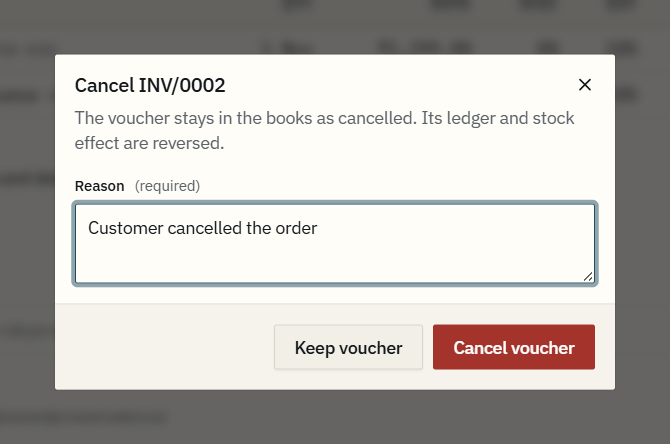
34
Figure 7.1 Cancelling a voucher. The reason is required;
Keep voucher backs out unchanged.
Do not cancel just to hide a bill
Cancellation reverses the ledger and stock effect, but the voucher remains in the day book
with its reason. It is for corrections, not for removing a real transaction from history.
7.3Journal
A journal is a manual double entry. Use it for adjustments that are not a sale, purchase,
receipt or payment: owner capital, depreciation, an expense paid from cash, or an
accountant’s correction. Every journal needs at least two lines, and total debits must
equal total credits. The screen shows Balanced only when they match;
Post stays disabled until then.
12
1 Click Journals in the sidebar. 2 Click
New journal.
Date. The date of the adjustment.
Account to debit, with the amount. For an expense, debit the expense.
Account to credit, with the same amount. Usually Cash or Bank.
Enter a Narration that names the reason.
Check that the dialog shows Balanced.
Click Post.
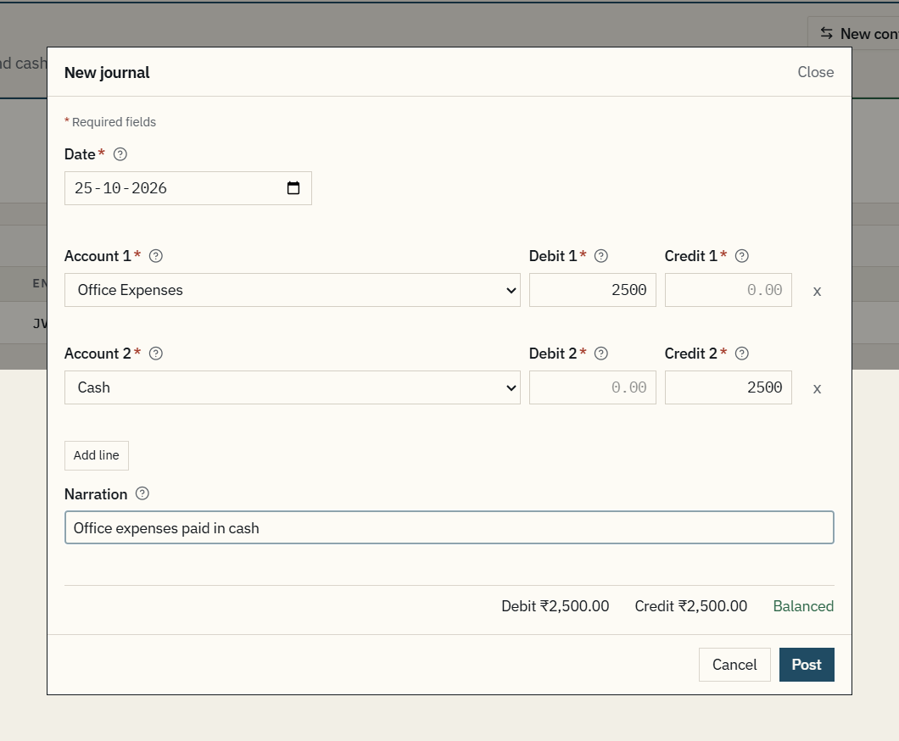
12356
Figure 7.2 A balanced journal: Office Expenses is debited,
Cash is credited, both for 2,500.
Before you journal
Write down the two account names and the amount before you open the screen. If you cannot
name both accounts, stop and ask the accountant. A journal entered to “see if it works” is
harder to clean up than a phone call.
Example
Debit
Credit
Owner introduces capital
Cash
Owner Capital
Office expense paid in cash
Office Expenses
Cash
Depreciation for the month
Depreciation
Accumulated Depreciation
Correct an over-posted expense
The account that was wrongly debited
The expense account
7.4Contra
A contra moves money between two cash or bank accounts. The common case is depositing cash
into the bank. It is not a receipt or a payment, so it does not affect a customer or
supplier.
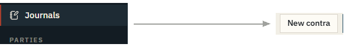
12
1 Click Journals in the sidebar. 2 Click
New contra.
Open Books → Journals and click New contra.
Choose the From account, usually Cash.
Choose the To account, usually Bank.
Enter the Date and Amount.
Add a Narration, for example “Cash deposited into the bank”.
Click Post.
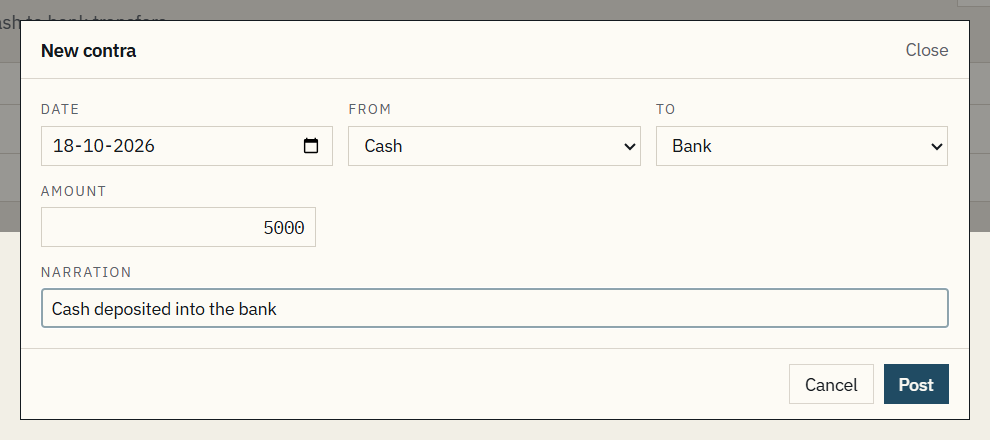
2346
Figure 7.3 A contra for 5,000 from Cash to Bank. The
narration explains the transfer.
7.5The journals list
The Journals page lists both manual journals and contra transfers, newest
first. The Type column tells you which one it is; the
Number
column is the voucher you can quote to your accountant.
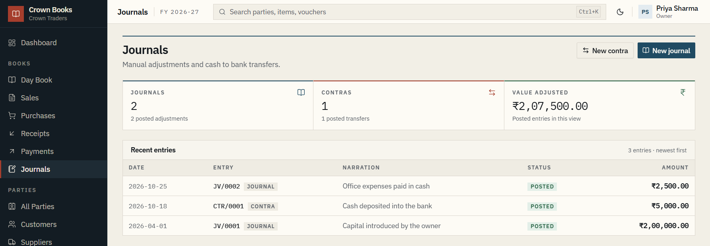
123
Figure 7.4 Posted journals and contras, with the narration
and amount.
1New manual journal
2New contra
3Posted journals and transfers
7.6When to ask your accountant
Opening balances do not tie to the old trial balance.
A GST return is due and the output or input tax looks wrong.
You need depreciation, prepaid expenses, provisions or any year-end adjustment.
A party balance is negative or a supplier balance is positive and you cannot explain it.
The trial balance does not say “Debits equal credits.”
The mistake
What to do
Wrong party, date, item or amount on a posted bill
Cancel it with a reason and enter the correct voucher.
Wrong GST rate or place of supply on a posted invoice
Cancel and re-enter. Do not patch it with a journal; the GST return needs the
corrected invoice.
Expense posted to the wrong ledger
Post a journal: debit the correct expense, credit the wrong one.
Owner put money into the business
Journal: debit Cash or Bank, credit Owner Capital.
Cash deposited into the bank
Contra: from Cash, to Bank. Not a receipt or payment.
Chapter 08Crown Books · 1.0
08
Reports
Reports are reads of posted vouchers. They do not store totals, so a cancelled voucher
disappears from the report and a new one appears immediately.
In this chapterHow reports work · Day book · Trial balance · Profit and
loss · Balance sheet · Report map
8.1How reports work
Every report reads the posted vouchers for the current company. A cancelled voucher is
excluded from the ledger effect. The date controls mean different things:
Control
Meaning
From / To
A period, for example 1 April to 22 October. Used by profit and loss, balance sheet
and registers.
As of
A single date. Used by receivables, payables and ageing: what was open on that day.
Basis
Age by due date (default) or by bill date. Due date is better for collection; bill
date is better for document age.
Three checks before you trust a report
Is the voucher posted, not cancelled? Is the date range or as-of date the one you meant?
Does the trial balance still say “Debits equal credits”?
8.2Report map
Report
Question it answers
When to use it
Receivables
Who owes us, and how much is overdue?
Weekly collection review.
Ageing
How old are the unpaid bills?
Prioritise the oldest debts.
Payables
Who do we owe, and what is due?
Weekly payment run.
Day book
What was posted on a date?
Find a voucher or check an entry.
Sales register
What did we sell, and what GST did we charge?
Before a GST return or a sales review.
Purchase register
What did we buy, and what input GST was recorded?
Before a GST return or a cost review.
Trial balance
Do the books balance?
Month end, before any report is trusted.
Profit and loss
Did we make money this period?
Monthly management review.
Balance sheet
What do we own and owe?
Month end, bank or investor review.
8.3Day book
The day book lists every voucher in date order, whatever its type. It is the first place
to look when you cannot find a document.
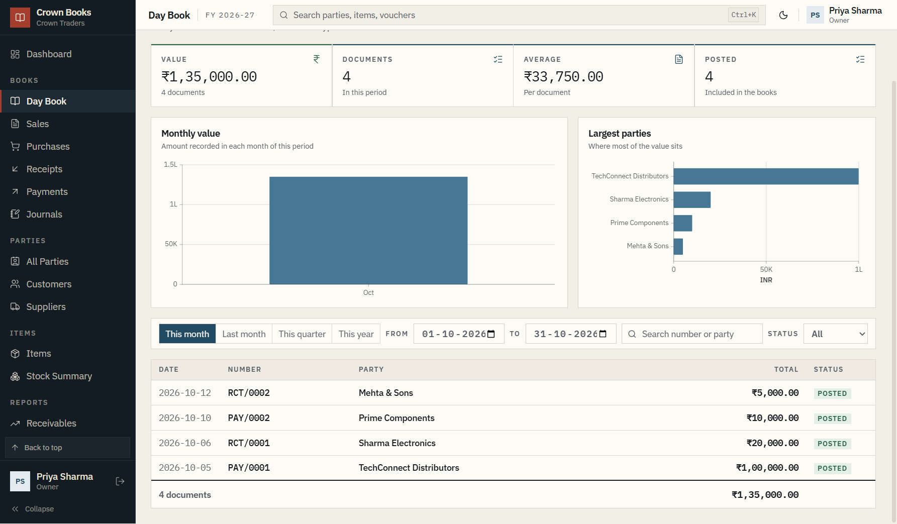
1234
Figure 8.1 The day book for October. Every document type is
in the same list, newest first.
1Filter by period, status or text
2Click a number to open the voucher
3Party and total
4Posted or cancelled
The date range defaults to the current month. Change From and
To for an older period, use Search for a number or
party, and filter by Status to see only posted or cancelled documents.
8.4Trial balance
The trial balance lists every account with a debit or credit balance. If the debit total
equals the credit total, the ledger is internally consistent. It does not prove that the
business made a profit; it proves that every voucher had two sides.
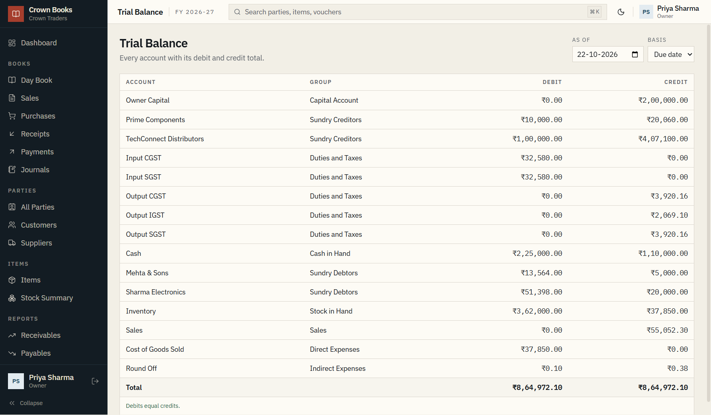
123
Figure 8.2 The trial balance. The Difference card reads
The books balance when the debit and credit totals agree.
1Difference: debits minus credits
2Every account with a balance
3Debit and credit columns
Read it by group. Assets and expenses normally sit on the debit side; liabilities, equity
and income on the credit side. A party can appear on either side because the balance is
net.
8.5Profit and loss
Profit and loss answers one question: did the business make money in this period? It shows
income, expenses and net profit. The period is controlled by From and
To.
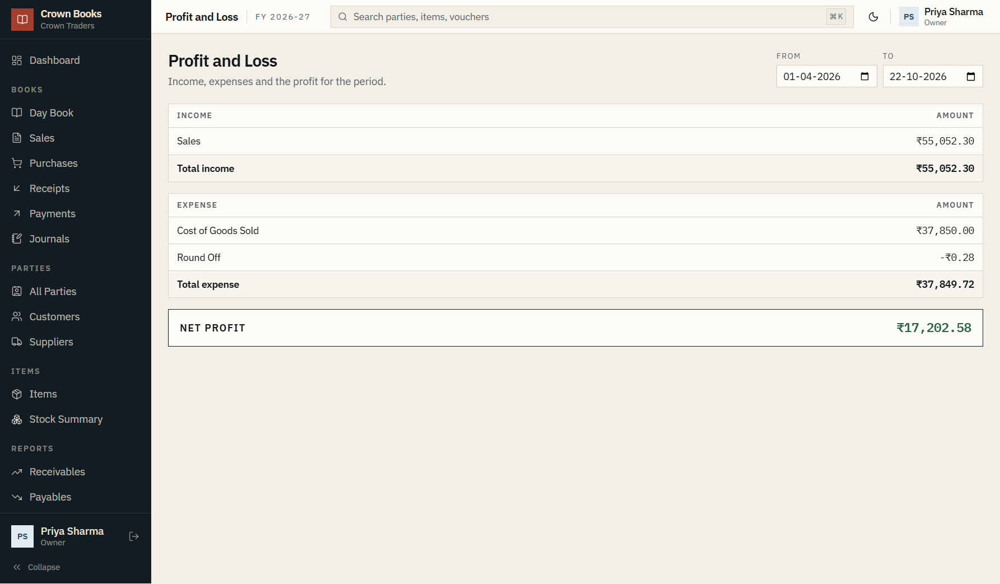
1234
Figure 8.3 Profit and loss for 1 April to 22 October 2026.
Cost of goods sold is the cost of the items that were sold.
1From and To set the period
2Income accounts
3Expense accounts
4Net profit for the period
Sales is shown net of returns. Cost of goods sold is the weighted average cost of the
stock that left. Expenses include round off and any journals posted to expense accounts. A
loss is shown in red.
8.6Balance sheet
The balance sheet is a photograph at a date: what the business owns, what it owes, and the
owner’s stake. It must satisfy Assets = Liabilities + Equity.
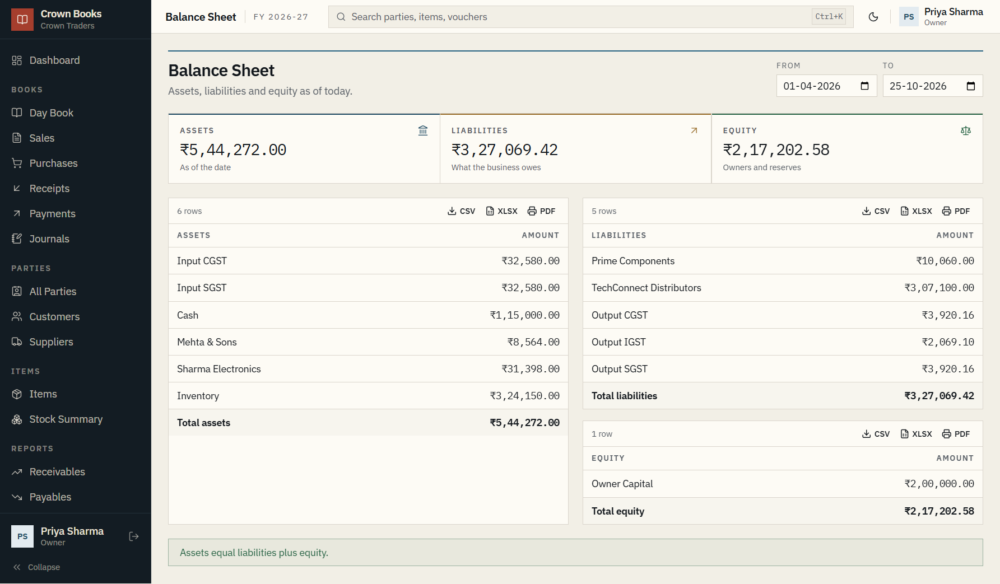
1234
Figure 8.4 The balance sheet. Equity includes owner capital
and the current period profit.
1What the business owns
2What it owes
3Owner stake plus current profit
4The check: assets equal liabilities plus equity
Inventory is valued at weighted average cost. Customer and supplier balances are net.
Current period profit is added to equity automatically, so the sheet balances without a
manual closing entry.
Chapter 09Crown Books · 1.0
09
Backup and safety
The books live in one SQLite file on this computer. A backup is a copy of that file.
Restore is deliberately manual so that a live database is never swapped underneath the
app.
In this chapterCreate a backup · Restore · When to back up · Safety rules
· This computer only
9.1Create a backup
Open Admin → Backup and click Create backup. The app
writes a timestamped copy, for example
crown-books-2026-10-22T09-15-00-000Z.db, into the backup folder
next to the database.
Click Create backup.
Confirm the new row in the list. It shows the file name, creation time and size.
Copy that file to a different drive or a USB stick. A backup on the same laptop is not
enough.
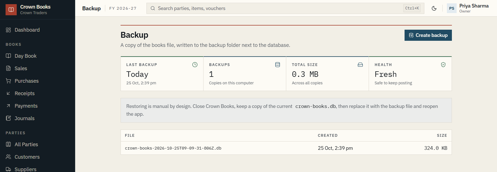
12
Figure 9.1 The backup screen. Each row is a full copy of
the books at that moment.
A backup is a complete copy, not a delta. Restore is done outside the app, with the app
closed.
Close the app first
Restoring while Crown Books is open can corrupt the database. Close the app completely,
including any window in the taskbar, before replacing the file.
9.2Restore a backup
Create a fresh backup of the current books, even if they are wrong. It is your safety
net.
Close Crown Books.
Open the app data folder. On Windows this is usually
%APPDATA%\crown-books.
Rename the current crown-books.db to
crown-books.before-restore.db.
Copy the chosen backup from the backups folder into the app data folder.
Rename the copy to crown-books.db.
Open Crown Books and sign in. Check the dashboard, the trial balance and a recent
invoice.
The backup folder is usually %APPDATA%\crown-books\backups. If
your installation uses a different folder, ask your administrator before moving files.
9.3When to back up
When
Why
Before the first real bill
So you can return to an empty, known state.
Every day after posting
The day’s work is the most expensive thing to lose.
Before a GST return
Freeze the numbers you are about to file.
Before a restore or upgrade
Keep a copy of the current state even if it is imperfect.
Every Friday, off the machine
Protect against disk failure, theft or ransomware.
At month end
A clean copy for the accountant.
9.4Safety rules
Do not edit the database with another program while Crown Books is open.
Do not copy the app folder to another computer. The install lock will refuse to run, and
the data may not be the same.
Do not restore a backup over a live database. Close the app first.
Do not keep every backup on the same laptop. Use a second drive or a USB stick.
9.5This computer only
Crown Books is offline by design. There is no cloud sync, no remote login and no automatic
off-site copy. That is a feature for privacy and a risk for disaster recovery. The backup
routine is the disaster recovery plan.
The 3-2-1 rule, in plain language
Keep 3 copies, on 2 different kinds of storage, with
1 copy off the computer. For a small shop, that can be the live database,
a daily backup on the laptop, and a weekly copy on a USB drive kept elsewhere.
Backup log
Print this page or keep a note in the shop. A backup is only real when someone has checked
that it opens and contains the right day’s work.
Date
File name
Kept where
Checked by
Chapter 10Crown Books · 1.0
10
Reference
Shortcuts, numbering, messages, the words your accountant uses, and the routine that keeps
the books clean.
In this chapterShortcuts · Voucher series · Roles · Messages · Glossary ·
Routines · Not in this edition · Help
10.1Keyboard shortcuts
Shortcut
Where
What it does
Ctrl + K
Anywhere in the app
Opens the search box. It finds parties, items, vouchers, accounts and screens. Type
to narrow, then press Enter.
F4
Sales and purchase entry
Opens the party picker without using the mouse.
Alt + A
Sales and purchase entry
Adds a new line.
Ctrl + Enter
Sales and purchase entry
Posts the voucher.
Esc
Sales and purchase entry
Goes back without posting. In a dialog it closes the dialog.
Tab
Every form
Moves to the next field.
10.2Voucher series and status
Series
Document
What it does
INV/
Sales invoice
Customer owes you; stock goes out; output GST.
PUR/
Purchase bill
You owe the supplier; stock comes in; input GST.
RCT/
Receipt
Money received from a customer.
PAY/
Payment
Money paid to a supplier.
JV/
Journal
Manual adjustment; debits must equal credits.
CTR/
Contra
Cash to bank or bank to cash.
OPN/
Opening
The one-time opening balances voucher.
CN/ · DN/
Credit / debit note
Reserved routes; not exposed as a screen.
Status is either Posted or
Cancelled. Posted documents count in reports. Cancelled
documents stay visible but their ledger and stock effect is reversed. A number is never
reused.
10.3People, roles and permissions
Every person signs in with their own email and password. A role is a named bundle of
permissions; a person gets exactly one role. Open Admin → Users and Roles
to add people, reset a password, disable an account, or change what a role may do.
Role
What it can do
Owner · Admin
Full access, including people, roles, voucher numbering, company settings and
backups. Both are locked system roles; they cannot be edited or deleted. At least one
active Owner must remain.
Accountant
Parties, items, vouchers, receipts, payments, journals and reports, plus exports and
backups. Can cancel a voucher and edit the chart of accounts. Can see people and
roles but not change them.
Billing Clerk
Raises sales invoices and purchase bills, records receipts, and views reports. Cannot
cancel a voucher, edit accounts, open backups, or change company settings.
Auditor
Read-only. Sees parties, items, vouchers, receipts, payments, journals and every
report, and can export them. Cannot post, edit or delete anything.
These four are starting points, not fixed rules. A non-system role can be edited, and a new
role can be created from the Roles tab. The role editor groups permissions
by domain: company, people, parties, items, vouchers, receipts and payments, journals,
reports, and backup. A person with user.manage can add people; a
person with role.manage can change roles.
Permissions are enforced in the main process
Hiding a button is not the protection. Every command is checked again on the server side,
so a role without voucher.cancel cannot cancel a voucher even if
the screen is reached some other way. Nobody can change their own role or disable their own
account, and nobody can grant a permission they do not hold themselves.
Changes to people and roles are written to the audit trail. Disabling a person keeps their
name on the vouchers they posted; it only stops them signing in.
10.4Messages and fixes
Message or symptom
What it means and what to do
“Debits equal credits.”
The banner at the bottom of the trial balance. Every posted voucher has two sides; no
action.
“The books do not balance.”
Stop. Take a backup and ask your accountant; do not post more entries to hide it.
“Opening balances have already been posted”
Only one opening voucher is allowed. Use a journal for corrections.
“Choose customer, supplier, or both”
The party has no role. Tick Customer, Supplier, or both in the party form; you can
change it later by editing the party.
“GSTIN must be 15 characters”
Count the characters. Remove spaces and dashes.
“State code: two digits”
Use 27, not “Maharashtra” or “MH”.
“Password must be at least 8 characters”
Use a longer password. There is no email reset in this edition.
“This computer is not authorised”
The install lock does not match. Contact your administrator; do not copy the app
from another PC.
The invoice is not in the list
Check the date range. Lists default to the current month.
The report is empty
Check the As of or From/To dates, and confirm the voucher is Posted, not Cancelled.
10.5Glossary
Word
Plain meaning
Receivable
Money a customer owes you.
Payable
Money you owe a supplier.
Debtor
The customer side of receivables.
Creditor
The supplier side of payables.
Debit (Dr)
One side of every entry. A customer balance in Dr means they owe you.
Credit (Cr)
The other side. A supplier balance in Cr means you owe them.
Ledger
A named account, for example Cash or Sales.
Voucher
Any posted document: invoice, bill, receipt, payment, journal or contra.
Narration
The note on the voucher that explains it.
Allocation
Linking a receipt or payment to the bill it settles.
Word
Plain meaning
On account
Money received or paid that is not yet linked to a bill.
Ageing
How old unpaid bills are, in 30-day buckets.
HSN / SAC
The GST classification code for goods / services.
CGST / SGST
The two halves of GST on a sale inside one state.
IGST
GST on a sale across state lines.
COGS
Cost of goods sold: what the items you sold cost you.
Opening balance
The position brought forward on the first day of the books.
Contra
A transfer between cash and bank.
Journal
A manual adjustment with matched debits and credits.
Trial balance
Every account balance, used to prove debits equal credits.
10.6Daily, weekly and monthly routine
When
Do this
Every day
Post today’s sales invoices and supplier bills. Enter receipts and payments, with
allocations. Create a backup at the end of the day.
Every week
Chase the oldest overdue bills. Plan the week’s payments. Check stock below reorder
level. Copy the latest backup off the machine.
Every month
Check that the Trial Balance shows The books balance and the banner
says “Debits equal credits.” Compare Profit and Loss with last month. Explain any
large Balance Sheet movement. Create a month-end backup for the accountant.
Every year
Confirm the financial year start month. Take a full backup before the first entry.
Ask the accountant about closing journals and depreciation.
10.7Not active in this edition
These items are reserved or only partly wired. Do not build a process around them yet.
Item
Status in this edition
Credit / debit notes
Routes exist but no screen is exposed. Cancel and re-enter for now.
Bank reconciliation
Not available. Use the registers and your accountant’s filing tool.
Invoice terms
Saved in Company settings but not printed by the current layout.
Payment method
A label only; receipts and payments post to Cash. Use Contra to move to Bank.
10.8Where to get help
Inside the business
The owner or administrator for access, installation and backups.
The accountant for journals, GST, depreciation and year-end entries.
The backup custodian for the weekly copy kept off the machine.
Before you call
The voucher number and date, if the problem is a document.
What you expected and what happened.
A screenshot of the message, if there is one.
Whether you have a backup from today.
Revision history
Edition
Date
Change
1.0
October 2026
First edition, covering setup, masters, purchases, sales, receipts, payments, stock,
journals, reports and backup.
 1
2
3
4
5
6
1
2
3
4
5
6